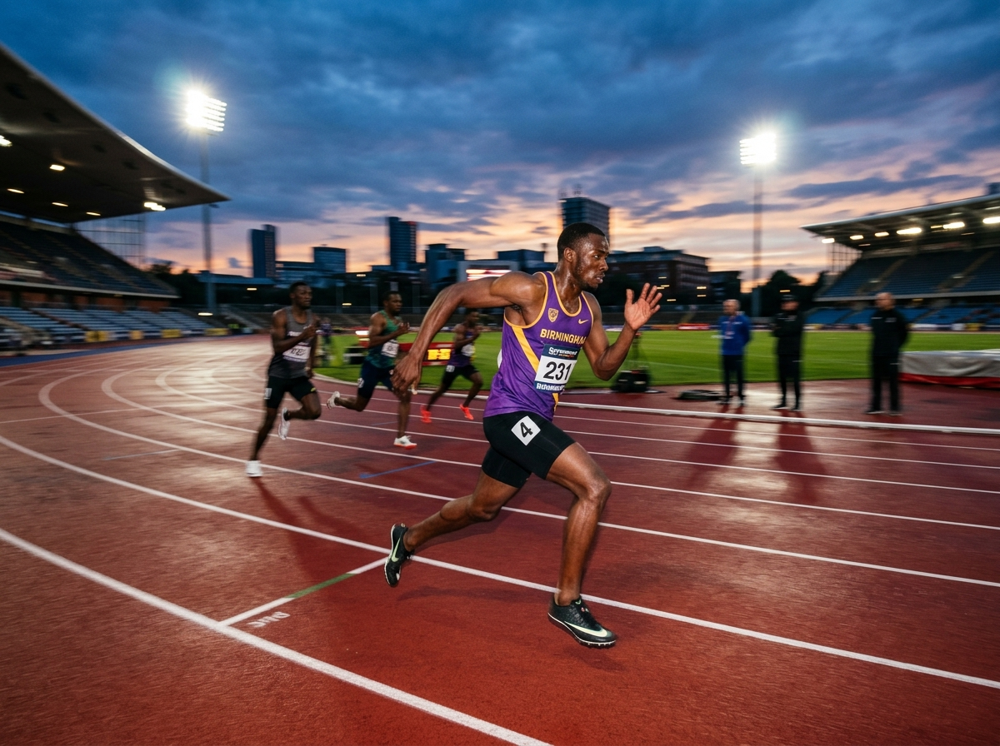

🐣 BEGINNERS PROGRAM
🐣 BEGINNERS PROGRAM
Couch to 5k (C25K) Cohort
Our structured 9-week course designed for complete non-runners and those returning after a long break. Led by England Athletics certified leaders, we start with gentle walk-run intervals and build up stamina in a friendly, zero-judgment atmosphere, culminating in a celebration graduation at Cannon Hill parkrun!
 🏳️🌈 PRIDE & SOCIALS
🏳️🌈 PRIDE & SOCIALS
Pride & Social Calendar
We proudly march in the Birmingham Pride parade, host lively post-run Thursday socials at The Fox, organize weekend brunch runs, and celebrate with annual summer picnics, Halloween runs, and Christmas parties. Keep an eye on our community announcements for dates!

📣 CHEER SQUADSRace Cheer Squads & Away Days
When Swifts take on local and international races — from the Great Birmingham Run 10k & Half to the London, Manchester, and Chicago Marathons — our famous Swifts Cheer Squad is out in full force with rainbow flags, cowbells, and enthusiastic cheers!
England Athletics London Marathon Club Ballot
Each year, as an affiliated England Athletics club, Birmingham Swifts receives allocated club entry places for the TCS London Marathon. All affiliated Swifts members who received a rejection in the public ballot and have actively volunteered or supported club sessions during the year are eligible to enter our transparent club ballot drawing.
To ensure you are eligible for the next club marathon ballot, join or renew with England Athletics affiliation via our Join Us page.
Autumn & Winter Evening Running Safety
As the evenings draw in, Thursday night canal towpath runs transition to illuminated street and well-lit canal circuits. All members and taster runners are requested to wear bright or reflective clothing, and a chest light or headtorch is strongly encouraged.
Run Leaders carry mobile phones and first aid kits on every run, and designated tail walkers ensure that the group stays tight and safe throughout the dark months.
Want to Get Involved?
Whether you want to join our next Couch to 5k group or come along for a Thursday social run, we'd love to meet you!